STEP 01
Separate no-power from no-display
A device can be powered while the display remains dark. Look for other signs of activity before assuming the power system is dead.
100% FREE DIAGNOSTICS COURSE • MODULE 02 OF 8
Build a safe decision tree for devices that will not power on, will not charge, restart unexpectedly or show unstable power behavior without jumping straight to part replacement.
Build a safe decision tree for devices that will not power on, will not charge, restart unexpectedly or show unstable power behavior without jumping straight to part replacement.
This module focuses on power, charging and no-start diagnostics. Competence means being able to convert symptoms into evidence, explain why a test is useful, interpret the result honestly, and choose the next step without creating unnecessary risk. A strong diagnostician reduces uncertainty systematically and knows when the evidence supports repair, further testing or escalation.
Customers often describe a problem using conclusions rather than observations. A diagnostic technician should translate that statement into something reproducible. Does the device show no sign of power? Does it charge only at a certain angle? Is there image but no touch? Does it restart under load? A precise symptom is the first piece of evidence. Without it, the rest of the process becomes guesswork.
Record what functions normally before you disassemble anything. Power behavior, charging, display, touch, cameras, microphones, speakers, buttons, wireless functions, vibration and sensors can all provide clues. Working functions help narrow the search and create a baseline for post-repair testing.
A hypothesis is a possible explanation that can be tested. An assumption is a conclusion accepted without enough evidence. If a phone does not charge, possible explanations can include the cable, adapter, contamination, connector, battery, charging assembly, software state or board-level fault. The next step should be chosen because it can eliminate or support one of those possibilities.
Start with observations and tests that add information without creating new risk. Visual inspection, known-good external accessories, settings checks, controlled restart behavior, connector inspection and model-specific service information can often reveal more than immediate disassembly.
Write down the symptom, test, result and conclusion at each stage. Diagnostic notes prevent circular troubleshooting where the same checks are repeated without learning anything new. A simple format works well: observation, hypothesis, test, result, next decision.
Not every test produces a clear yes-or-no answer. A device may behave normally for several minutes and fail only under heat, movement, charging load or network activity. Treat uncertainty honestly. 'Not reproduced yet' is better than pretending the fault has been solved.
Changing several components simultaneously destroys useful evidence. Replace or alter only what the evidence justifies, then test before moving to the next hypothesis.
The same symptom can require different access points, connector checks or service procedures on different devices. Before any physical diagnostic work, identify the exact model and compare it with reliable service information.
A damaged battery, severe liquid exposure, heat, burning odor, smoke, electrical damage or unknown previous repair can change the risk level immediately. Safe escalation is a legitimate diagnostic outcome.
After any repair or corrective action, reproduce the original use case as closely as practical. Final verification should answer the same question that started the diagnostic process: is the original problem actually resolved?
A device can be powered while the display remains dark. Look for other signs of activity before assuming the power system is dead.
Known-good charger, cable and power source checks can prevent unnecessary disassembly.
Swelling, heat or visible battery damage changes the task from routine diagnosis to safety management.
Choose a hypothetical device complaint and create a four-column diagnostic note: observation, hypothesis, test and result. Observation must contain only something that can be seen, heard, measured or reproduced. Hypothesis should be one possible explanation, not a conclusion. Test should be the safest useful action that can support or weaken that hypothesis. Result should describe what actually happened, even if it was inconclusive. Then write the next decision you would make. Repeat the exercise with a different hypothesis for the same symptom. This prevents tunnel vision and trains you to compare explanations instead of becoming attached to the first idea that sounds plausible.
Choose a hypothetical device complaint and create a four-column diagnostic note: observation, hypothesis, test and result. Observation must contain only something that can be seen, heard, measured or reproduced. Hypothesis should be one possible explanation, not a conclusion. Test should be the safest useful action that can support or weaken that hypothesis. Result should describe what actually happened, even if it was inconclusive. Then write the next decision you would make. Repeat the exercise with a different hypothesis for the same symptom. This prevents tunnel vision and trains you to compare explanations instead of becoming attached to the first idea that sounds plausible.
Choose a hypothetical device complaint and create a four-column diagnostic note: observation, hypothesis, test and result. Observation must contain only something that can be seen, heard, measured or reproduced. Hypothesis should be one possible explanation, not a conclusion. Test should be the safest useful action that can support or weaken that hypothesis. Result should describe what actually happened, even if it was inconclusive. Then write the next decision you would make. Repeat the exercise with a different hypothesis for the same symptom. This prevents tunnel vision and trains you to compare explanations instead of becoming attached to the first idea that sounds plausible.
Choose a hypothetical device complaint and create a four-column diagnostic note: observation, hypothesis, test and result. Observation must contain only something that can be seen, heard, measured or reproduced. Hypothesis should be one possible explanation, not a conclusion. Test should be the safest useful action that can support or weaken that hypothesis. Result should describe what actually happened, even if it was inconclusive. Then write the next decision you would make. Repeat the exercise with a different hypothesis for the same symptom. This prevents tunnel vision and trains you to compare explanations instead of becoming attached to the first idea that sounds plausible.
Choose a hypothetical device complaint and create a four-column diagnostic note: observation, hypothesis, test and result. Observation must contain only something that can be seen, heard, measured or reproduced. Hypothesis should be one possible explanation, not a conclusion. Test should be the safest useful action that can support or weaken that hypothesis. Result should describe what actually happened, even if it was inconclusive. Then write the next decision you would make. Repeat the exercise with a different hypothesis for the same symptom. This prevents tunnel vision and trains you to compare explanations instead of becoming attached to the first idea that sounds plausible.
Choose a hypothetical device complaint and create a four-column diagnostic note: observation, hypothesis, test and result. Observation must contain only something that can be seen, heard, measured or reproduced. Hypothesis should be one possible explanation, not a conclusion. Test should be the safest useful action that can support or weaken that hypothesis. Result should describe what actually happened, even if it was inconclusive. Then write the next decision you would make. Repeat the exercise with a different hypothesis for the same symptom. This prevents tunnel vision and trains you to compare explanations instead of becoming attached to the first idea that sounds plausible.
Choose a hypothetical device complaint and create a four-column diagnostic note: observation, hypothesis, test and result. Observation must contain only something that can be seen, heard, measured or reproduced. Hypothesis should be one possible explanation, not a conclusion. Test should be the safest useful action that can support or weaken that hypothesis. Result should describe what actually happened, even if it was inconclusive. Then write the next decision you would make. Repeat the exercise with a different hypothesis for the same symptom. This prevents tunnel vision and trains you to compare explanations instead of becoming attached to the first idea that sounds plausible.
Choose a hypothetical device complaint and create a four-column diagnostic note: observation, hypothesis, test and result. Observation must contain only something that can be seen, heard, measured or reproduced. Hypothesis should be one possible explanation, not a conclusion. Test should be the safest useful action that can support or weaken that hypothesis. Result should describe what actually happened, even if it was inconclusive. Then write the next decision you would make. Repeat the exercise with a different hypothesis for the same symptom. This prevents tunnel vision and trains you to compare explanations instead of becoming attached to the first idea that sounds plausible.
The most common mistakes are replacing parts before confirming the symptom, using one successful boot as proof that a fault is gone, skipping baseline tests, ignoring customer history, changing multiple variables simultaneously and treating every unusual behavior as hardware failure. A good diagnostic process remains willing to reject its favorite hypothesis when the evidence does not support it.
Before you consider a case complete, list the original complaint, the corrective action and the tests required to prove resolution. Include nearby functions that could have been disturbed. If the problem was intermittent and cannot be reproduced after service, record that limitation rather than promising certainty.
The lesson, quiz and downloadable PDF are provided at no cost. The PDF is intended for offline review and diagnostic practice. Students can repeat the knowledge check without paying or losing access.
Imagine the first test did not support your original hypothesis. Return to the evidence, list what the test ruled out, what remains possible and what new information would be most valuable. Consider whether the symptom could be environmental, software-related, connector-related, power-related, peripheral or board-level. Choose a next step that is proportionate to the risk and explain what outcome would change your plan. A diagnostic workflow is not a script with one path; it is a decision process that adapts as evidence changes.
Imagine the first test did not support your original hypothesis. Return to the evidence, list what the test ruled out, what remains possible and what new information would be most valuable. Consider whether the symptom could be environmental, software-related, connector-related, power-related, peripheral or board-level. Choose a next step that is proportionate to the risk and explain what outcome would change your plan. A diagnostic workflow is not a script with one path; it is a decision process that adapts as evidence changes.
Imagine the first test did not support your original hypothesis. Return to the evidence, list what the test ruled out, what remains possible and what new information would be most valuable. Consider whether the symptom could be environmental, software-related, connector-related, power-related, peripheral or board-level. Choose a next step that is proportionate to the risk and explain what outcome would change your plan. A diagnostic workflow is not a script with one path; it is a decision process that adapts as evidence changes.
Imagine the first test did not support your original hypothesis. Return to the evidence, list what the test ruled out, what remains possible and what new information would be most valuable. Consider whether the symptom could be environmental, software-related, connector-related, power-related, peripheral or board-level. Choose a next step that is proportionate to the risk and explain what outcome would change your plan. A diagnostic workflow is not a script with one path; it is a decision process that adapts as evidence changes.
Imagine the first test did not support your original hypothesis. Return to the evidence, list what the test ruled out, what remains possible and what new information would be most valuable. Consider whether the symptom could be environmental, software-related, connector-related, power-related, peripheral or board-level. Choose a next step that is proportionate to the risk and explain what outcome would change your plan. A diagnostic workflow is not a script with one path; it is a decision process that adapts as evidence changes.
Imagine the first test did not support your original hypothesis. Return to the evidence, list what the test ruled out, what remains possible and what new information would be most valuable. Consider whether the symptom could be environmental, software-related, connector-related, power-related, peripheral or board-level. Choose a next step that is proportionate to the risk and explain what outcome would change your plan. A diagnostic workflow is not a script with one path; it is a decision process that adapts as evidence changes.
Imagine the first test did not support your original hypothesis. Return to the evidence, list what the test ruled out, what remains possible and what new information would be most valuable. Consider whether the symptom could be environmental, software-related, connector-related, power-related, peripheral or board-level. Choose a next step that is proportionate to the risk and explain what outcome would change your plan. A diagnostic workflow is not a script with one path; it is a decision process that adapts as evidence changes.
VISUAL DIAGNOSTIC WORKFLOW

A device can be powered while the display remains dark. Look for other signs of activity before assuming the power system is dead.

Known-good charger, cable and power source checks can prevent unnecessary disassembly.

Swelling, heat or visible battery damage changes the task from routine diagnosis to safety management.
Pass all three questions before marking the module complete. Attempts are free and unlimited.